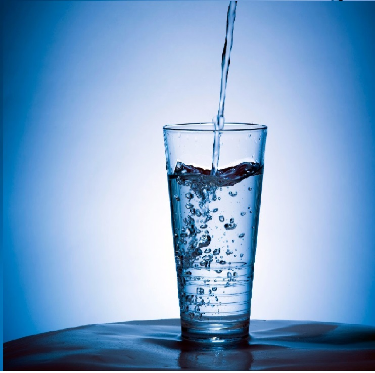

Назад
🚰 Нечто большее 🚰
НО ВОДА ЭТО НЕЧТО БОЛЬШЕЕ ЧЕМ ПРОСТО СМЕСЬ ВЕЩЕСТВ.Она живая.Как вода может быть живой спросили бы многие.Это можно проверить при помощи экспиремента.
В начеле нужно взять три стокана и насыпать туда рис, налить одинаковую воду (по температури и размеру).На протижение месяца нужно говорить 1 стокану добрые слова, 2 злые слова и оскорблять, а на 3 не оброщать внемания.Чтож проверь, что станет с рисом через месяц.
Этот экспиремент расскажет вам многое о воде.
Вода, она всё запоминает.
Эксперемент.
Попробуй сказать воде из родника добрые слова и ты почувствуешь что она будет очень вкусной и пренисёт тебе хорошое настроение
Значет вода и вправду всё помнет.Говори воде только добрые слова!
Как связаться номер телефона: +7 937 402 73 42
электронная почта: viktorias0880@gmail.com